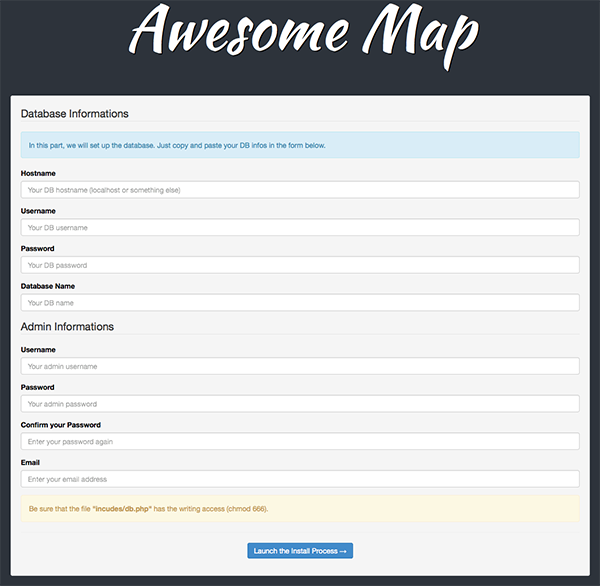

Backend Installation
The installation of the backend (Admin Page) of Awesome Map is really easy since an install file is included in the item.
First of all, open the folder "Files" of the item. To set up the admin page, the first step is to transfer the folder named "awesome_map" onto your server. You can rename this folder by what you want, for example, if you wish the Awesome Map admin to be available just by adding "admin" to your website URL, you can just rename this folder by "admin"... It's up to you :-) .
In this tutorial, we will consider that you haven't rename it, so the admin page will be available to something like : http://yoursite.com/awesome_map/.
Once the transfer is done, you need to find your database accesses (hostname, username and password) to run the install.php file. Then, go to this url : http://yoursite.com/awesome_map/install.php - be sure to replace "yoursite.com" by yours and "awesome_map" by the name of the folder where the Awesome Map admin files are located.
Now you should this something like that :

It's the install page which allows you to create an admin account and to set up your database. Just follow the instructions by entering your DB infos and by creating your first admin account.
Once this will be done, you will be redirected to the login page where you will just have to enter your admin login infos.
Now you should see the Awesome Map admin page where you can add some markers and customize the map settings...
That's ok for the admin part, now let's set up the front-end page (the page where people will be able to see your map on your website).
Frontend Installation
Now that you have installed your admin part, I'm sure that you want to integrate your Awesome Map into one or more pages of your website... And again, it's really easy to do!
1. Open the PHP / HTML / ASP page where you want to place your Awesome Map
2. Copy / Paste this code between the <head> and </head> tags of your page :
<!-- Begin Awesome Map CSS -->
<link href="awesome_map/css/font-awesome.min.css" rel="stylesheet">
<link href="awesome_map/css/awesome_map.css" rel="stylesheet">
<!-- End Awesome Map CSS -->
<!-- Begin Awesome Map JS -->
<script src="awesome_map/js/jquery-1.10.2.min.js" type="text/javascript"></script>
<script type="text/javascript">
var adm_path = "awesome_map/";
</script>
<script src="https://maps.googleapis.com/maps/api/js?v=3.exp&sensor=false&libraries=places" type="text/javascript"></script>
<script src="awesome_map/js/infobox.js" type="text/javascript"></script>
<script src="awesome_map/js/markerwithlabel.js" type="text/javascript"></script>
<script src="awesome_map/js/awm_marker.js" type="text/javascript"></script>
<script src="awesome_map/js/markerclusterer.js" type="text/javascript"></script>
<script src="awesome_map/js/awesome_map.js" type="text/javascript"></script>
<!-- End Awesome Map JS -->
Be sure to replace all of the occurrence of "awesome_map" by your path to the admin folder of Awesome Map that you set up before. Don't forget the line 11 of the code too.
3. Copy / Paste the following HTML code where you want the map to appear :
<form class="awm_search">
<input type="text" class="form-control" id="location" placeholder="Enter the location where you want to go.">
</form>
<div id="awm_map" class="map"></div>
The form represents the search form which you can display on your map. You have to add it, but you can hide it from the admin page.
Your map should now appear when you will refresh the page. By default, the map will take 100% of the height and width of its parent container. So if you want to resize it, you can just do this :
<form class="awm_search">
<input type="text" class="form-control" id="location" placeholder="Enter the location where you want to go.">
</form>
<div style="width: 300px; height:300px;">
<div id="awm_map" class="map"></div>
</div>
With this code, your map will be 300x300px.
If you don't see the map, it's because its parent container doesn't have any size. So you just have to put the map in a container just like with the code above.
If you use Bootstrap, you can also create a responsive map just by adding the "col" class directly on the map, for example :
<form class="awm_search">
<input type="text" class="form-control" id="location" placeholder="Enter the location where you want to go.">
</form>
<div id="awm_map" class="map col-md-12"></div>
"col-md-12" for Boostrap 3.0+ and "span12" for Bootstrap 2.

{kind=link}